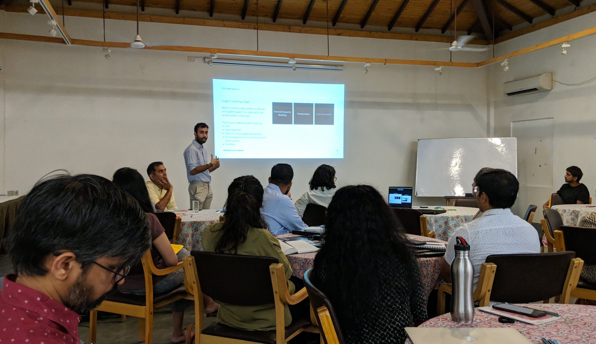
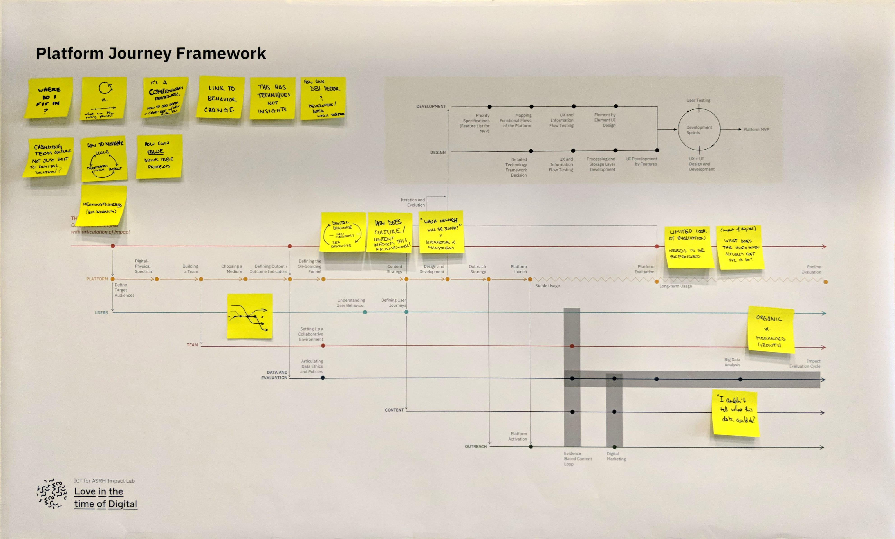

Love in the Time of Digital
Overview
Creating a framework to help Adolescent Sexual and Reproductive Health (ASRH) organisations leverage digital platforms to enhance interventions.Role
Researcher and DesignerClient
Population Council, Bill & Melinda Gates FoundationFor
QuicksandAn increasing number of young people are turning to digital mediums for information, entertainment and networking. In the ASRH sector too, adoption of digital technologies is gaining momentum. Therefore, it is fast becoming an imperative for the sector to develop standards and guidelines for designing, managing and evaluating interventions that leverage these technologies to achieve their outcomes.
This project seeks to arrive at a prototype of a framework that can be used to plan, implement and evaluate digital-platform based interventions designed to aid Adolescent Sexual and Reproductive Health outcomes (ASRH). These include improved knowledge, reduced teenage pregnancies, a drop in Sexually Transmitted Infections, increased consumption of SRH services by the adolescents and a change in their behaviour towards sexual and reproductive health.
The absence of definitive data on what works to ensure healthy childhood-to-adulthood transitions poses a challenge in developing policies and program interventions that can lead to holistic development. The Population Council has responded to these gaps through a research project, ‘Understanding the lives of adolescents and young adults’, Project UDAYA, in Uttar Pradesh and Bihar. Insights from the UDAYA study show that a growing number of programs and interventions are using Information and Communication Technology (ICT) to reach and engage with adolescents, and to build their knowledge and awareness on pertinent issues.
A sector where this medium has been especially salient has been Adolescent Sexual and Reproductive Health (ASRH). In India’s context, where adolescent sexuality is taboo, digital media and communication has allowed for innovative programming that circumvent challenges of social stigma, judgment and bias to reach adolescents in a safe and private manner. However, many such interventions lack rigorous monitoring and evaluation, which gives rise to the need for more clarity on the impact such programs can potentially have, and the strategies that can optimise this impact.
This project was conceptualised to address gaps such as these. It seeks to understand the overall landscape of ASRH programming through digital media and ICT in India, identify strengths and weaknesses in these approaches, and suggest a framework and tools that could enhance the effectiveness of these interventions across their lifetimes.
The Quicksand team, along with collaborations with experts from various fields, and an Impact Lab engaged in researching three organisations that had taken the digital route in their ASRH program journey. Quicksand’s role was to gather learnings from the experiences of the three organisations along with learnings from the commercial sector and facilitate a conversation around key emergent themes between the stakeholders so as to compile a draft framework.

Presenting the findings from the research to stakeholders
The three organisations that were researched were chosen chosen to bring a representative mix of technology, scale of intervention, duration of intervention, and the locational context. The scope of the study limited the research to these three platforms, which were Love Matters India, Kahi Ankahi Baatein (by CREA), and M-Sathi (by Restless Development).
The project led to creation of a framework and a detailed research paper. The framework, called the Platform Journey Framework maps out the stages of a digital intervention, and the various factors the intervention would have to take into account through its life-cycle. This framework is of particular value for both the organisations who wish to use digital interventions and the organisations who fund such projects.

Draft of the Platform Journey Framework
In conclusion, digital technologies offer great opportunities in the ASRH space and can become a significant enabling factor for organisations in the sector, who, with digital can take their ideas to scale and impact a lot more people than they would with traditional methods. Digital technologies also present a significant capacity challenge for a lot of stakeholders in the sector, who will need to realign their focus to also include technology skills to remain competitive as digital technologies are increasingly embraced. Furthermore, it remains critical that the subject matter expertise and on ground connect that many organisations in the sector already possess is further nurtured and partnered with technology and not in any way replaced by it.
Workshopping ideas based off the proposed framework
There are several pitfalls and dangers of using technology in a sensitive space like ASRH and the knowledge this sector already possesses should help mitigate the risks and mediate the adoption of technology. The journey of a digital platform with its components presented in this report is a prototype that we hope will be further refined through interactions and testing with a diverse range of organisations and programs in the sector that are leveraging digital technologies. We hope the report opens up new conversations and processes within organisations and the sector at large, on how to design these platforms better, as well as in using data more effectively in measuring the impact of these platforms.